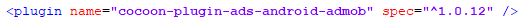

Trabalhando com Plugins no Cordova CLI
ADS
O primeiro artigo da nossa série foi o Construct 2 - Trabalhando com Cordova CLI, onde abordamos desde a preparação do ambiente,
até configurações de exportação do Construct 2, depois abordei em artigos separados Gerando APK pelo Corodova CLI, também
a Gerando o projeto Xcode no Mac usando Cordova CLI, que é para criar seu projeto para IOS.
Agora chegou a hora de abordar com detalhes os plugins, como utilizamos uma plataforma híbrida, costumam funcionar corretamente.
Um dos grandes problemas quando trabalhamos com Cordova CLI, são os plugins, pois depende da versão do Cordova instalada no projeto, depende também da
versão que o plugin foi feito desenvolvido, por fim vou dar uma luz neste grande campo nebuloso de acordo com minhas experiências e frustrações.
Ultimate ADS
Vamos começar com o Ultimate ADS, tentei de diversas formas utilizar o plugin nativo do C2, também tentei o plugin do cocoon, o problema é que sempre ocorre erros no momento que
está baixando o plugin no github via Cordova CLI, mesmo utilizando a biblioteca do cranberrygame,
que sempre utilizava no Intel XDK, também já utilizei na plataforma Cordova CLI, sendo assim irei utilizar o plugin pago Ultimate ADS, que
utiliza uma biblioteca diferente, também foi o único que consegui fazer funcionar também no IOS.
Primeiro vamos desinstalar a plataforma atual, que neste momento é a Cordova 7.0, irei adicionar a plataforma 6.4.0, pois além do plugin ad-mob, vou instalar a Google Play Services
no projeto, que pretendo abordar futuramente.
O comando para remover a plataforma é.
cordova platform remove android
O comando para desinstalar a plataforma, aguarde o Node terminar de remover e depois adicione a plataforma Android 6.4.0 com o comando abaixo
cordova platform add android@6.4.0
Aguarde terminar de instalar.
Com o plugin Ultimate ADS já adicionado no projeto.
O funcionamento dele é bem similar ao plugin nativo da engine.
Este plugin também funciona no Cordova 7.0.
Para o nosso exemplo, eu modifiquei o Test Mode para Enable, assim podemos testar se o plugin está sendo carregado, sem gerar
carregamentos incorretos de propagandas, desta forma, não é necessário colocar as IDs das propagandas e nem do aplicativo na Google Play.
Feito essa alteração, exporte novamente seu projeto, repare que no arquivo config.xml existe uma nova linha que é referente ao plugin
base do ad-mob

Agora vamos fazer uma pequena alteração, para utilizar uma versão específica do plugin no repositório do projeto, 1.0.12, esta funciona
corretamente, a 2.0 "que é a mais atualizada" até a o momento, não tem compatibilidade com o plugin do Construct 2.
Altere a linha conforme a imagem abaixo.

Se vai criar um novo projeto, só esta alteração já é o suficiente para que o Cordova CLI baixe a versão correta do plugin 1.0.12.
Aguarde a instalação do plugin que tem algumas dependências "plugins adicionais", com o processo concluído, agora podemos gerar uma nova build.
Caso queira adicionar no seu projeto atual, utilize o comando no Cordova CLI.
cordova plugin add cocoon-plugin-ads-android-admob@1.0.12
Pegue os os arquivos da pasta www, substitua os arquivos da sua pasta do Cordova, basicamente só isso que vai precisar fazer
para atualizar seu projeto, por isso que gosto tanto do Cordova CLI.
cordova build
Com o processo concluído, teste.
Perceba que é bem simples de trabalhar com Cordova CLI, claro que existem problemas como incompatibilidade de plugins, até mesmo da plataforma, por isso serviços
online como Cocoon e Phonegap tem diversos problemas, eles provavelmente trabalham com versões espefícicas da plataforma "normalmente muito desatualizadas, tanto dos
plugins quanto da plataforma".
Depois que aprendi a trabalhar com Cordova CLI, não gosto nem de olhar para os serviços online, por diversas vezes fiquei preso em problemas onde as mensagens
de erros pareciam hieróglifos, pois na maioria sequer tinham código de erros onde eu poderia pesquisar uma solução.
Falando em desempenho, eu considero bem satisfatório, além do tempo que ganho para gerar cada build, o que antes eram minutos, agora espero apenas alguns
segundos. As mensagens de erros são bem descritivas, por estarmos trabalhando diretamente na plataforma.
Estou usando o emulador de Android Nox, considerado por muitos como o melhor emulador
para PC. Clique aqui para ver a imagem do admob funcionando.
Existem outros plugins de ADS, como Appodeal, que de certa forma é bem eficaz, porém vai perder suporte para
Construct 2 em março de 2018, não vou abordar ele.
Futuramente abordarei outros plugins e vou atualizar este documento.